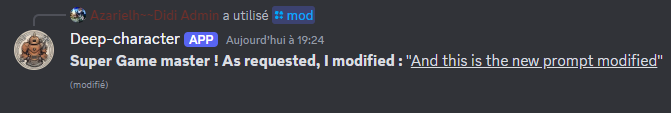
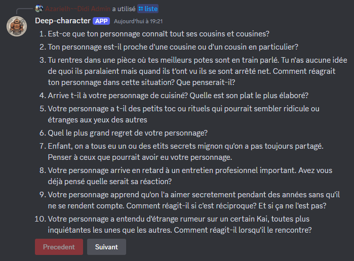

Mes Projets
Deep-Character
Deep-Character est un bot discord dédié à un forum de jeu de rôle. Concrètement, sur commande, le bot va chercher aléatoirement un prompt sur un fichier json et la poste dans le salon. On peut ajouter des prompts directement depuis discord, afficher une liste dynamique avec des boutons qui permettent de naviguer dans les pages et modifier les prompts afin d'en corriger les erreurs.
Ajouter un nouveau prompt
Grâce à cette fonctionnalité, chaque serveur pourra ajouter des prompts propre à leur univers.

Modifier un prompt éxistant
Il était nécessaire d'ajouter une telle fonction afin de corriger de potentielles fautes qu'elle soit linguistique ou loristique.
Afficher une liste
La fonction liste affiche les 10 premiers promts dans un embed message accompagné de bouton 'précédent' et 'suivant' permettant de naviguer dans la liste par bloc de 10.
TUMO LAB
While exercing as a coach in Tumo, my interest for programming skills improved deeply. I invest some of my work time to do programming workshop on my own.
Lab 1
contenu à venir
Lab 2
contenu à venir
Lab 3
contenu à venir
Optimisation de suivi
Ce projet est dans une dynamique de dévellopement continu. Structuration, automatisation et optimisation des informations de suivi.
Stack
- Google Sheets
- Google Apps Script
- Javascript
Problème de départ
- Informations nécessaire dispersées
- Complétions de liste manuelle
- Informations dispersées
- Pas d'historique accessible, donc de visuel sur les changements de parcours/créneaux
- Erreurs humaines
Objectifs
- Gagner du temps
- Fiabiliser les données
- Rendre l'outil accessible à tous
Solutions mises en place
- Refonte et factorisation du tableur via des formules avancées (INDEX, MATCH, QUERY…) pour limiter les doublons et réduire les erreurs humaines
- Développement de scripts automatisés : réinitialisation mensuelle de cases à cocher, envoi conditionnel d’emails, conversion de liens en affichage d’images
- Création d’une interface claire, structurée et réutilisable par des utilisateurs non techniques
Impact
- Un import simple de 4 tableaux depuis looker studio rassemble toutes les infos nécessaire au même endroit.
- si prêt pour un lab même si pas inscrit
- slow learner or high learner
- domaines choisis
- ect...
- Photo des jeunes dans le tableur à coté des informations de suivi avec respect du rgpd (elle ne sont pas stockés sur le tableur)
- Outil utilisable sans connaissance approfondie du logiciel